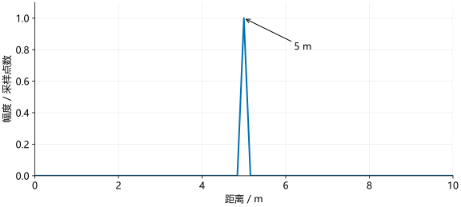

距离测量¶
延迟怎样变成拍频
回波与混频中，往返延迟为 \(\tau=2R/c\)，线性扫频的频率差为 \(f_b=S\tau\)。\(S\) 是扫频斜率，\(c\) 是光速；两式相接即为：
实际处理中，\(S\) 来自雷达配置，\(f_b\) 从一次 chirp 的采样序列中估计。距离 FFT 就是沿这组采样点进行 FFT。
一个 5 m 目标¶
取斜率 \(S=30\) MHz/µs、采样率 \(F_s=8\) MHz、采样点数 \(N_s=256\)。目标距离为 5 m，则拍频为：
频率格间隔为 \(8\text{ MHz}/256=31.25\) kHz，所以峰应出现在 \(1000/31.25=32\) 格。
Python 示例¶
import numpy as np
c, slope, fs, ns = 3e8, 30e12, 8e6, 256
distance = 5.0
fb = 2*slope*distance/c
t = np.arange(ns)/fs
x = np.exp(1j*2*np.pi*fb*t)
X = np.fft.fft(x)
k = np.argmax(np.abs(X[:ns//2]))
estimated_frequency = k*fs/ns
estimated_range = c*estimated_frequency/(2*slope)
print(k, estimated_frequency/1e6, estimated_range)
MATLAB 示例¶
c = 3e8; slope = 30e12; fs = 8e6; ns = 256;
distance = 5;
fb = 2*slope*distance/c;
t = (0:ns-1)/fs;
x = exp(1j*2*pi*fb*t);
X = fft(x);
[~, index] = max(abs(X(1:ns/2)));
k = index - 1;
estimatedFrequency = k*fs/ns;
estimatedRange = c*estimatedFrequency/(2*slope);
disp([k estimatedFrequency/1e6 estimatedRange]);
结果为 32, 1, 5，分别表示第 32 格、1 MHz 和 5 m。示例将正距离设为正拍频，搜索正频率一侧；实测数据的频率符号需用已知距离目标确认。

距离轴¶
若 FFT 点数为 \(N_{\mathrm{FFT}}\)，第 \(k\) 格的频率和距离为：
这里的换算分两步。DFT 的第 \(k\) 行使用参考相位 \(2\pi kn/N_{\mathrm{FFT}}\)，频率为 \(f\)、采样率为 \(F_s\) 的信号相位为 \(2\pi fn/F_s\)。两者匹配时：
再把 \(f_k\) 代入 \(R=cf_b/(2S)\)，就得到 \(R_k\)。相邻两格相减：
未补零时，\(N_{\mathrm{FFT}}=N_s\)。本例相邻距离格为：
这里取正拍频一侧的 \(k\)。k 从 0 开始，MATLAB 的第一个元素对应 \(k=0\)、频率为 0、距离为 0；用 MATLAB 下标直接代入会让所有距离都多出一格。
处理整帧¶
设 frame 按 [采样点,轮次,通道] 排列，距离 FFT 应只作用于第一维：
\(m\) 表示轮次，\(p\) 表示通道。对每个固定的 \(m,p\)，计算过程都与前面的单目标示例相同。
ns = frame.shape[0]
window = np.hamming(ns).reshape(ns, 1, 1)
range_cube = np.fft.fft(frame * window, axis=0)
ns = size(frame,1);
window = reshape(0.54-0.46*cos(2*pi*(0:ns-1)/(ns-1)),[],1,1);
rangeCube = fft(frame.*window,ns,1);
窗的尺寸为 [采样点,1,1]，因此会对每个轮次和通道使用相同的窗。输出尺寸不变，但第一维已从时间采样点变成距离格。\(X_r[k,m,p]\) 对应代码中的 range_cube[k,m,p]。它的模表示该频率分量的强弱，相角保留了不同轮次、不同通道的相位差；若此时只保存 abs(range_cube)，后面的测速和测角就失去了所需信息。
距离分辨率¶
采样时间为 \(T_{\mathrm{ADC}}=N_s/F_s\)，覆盖带宽为 \(B_{\mathrm{ADC}}=ST_{\mathrm{ADC}}\)。代入后，未补零的距离格间隔可写为：
具体约分过程是：
这也是矩形窗下常用的理想距离分辨尺度。本例有效带宽为 960 MHz，因此得到 0.15625 m。加窗会改变主瓣宽度，实际分开两个目标的能力还与信噪比和目标强弱有关。
单个目标的距离可以用峰值插值估得更细，但“更精确地估计一个峰”与“分开两个峰”是两个问题。
IWR1443 和 IWR1843 使用同一换算公式，应分别代入实际采样率、斜率和点数。案例中的原参数及代码见参数对照与代码分析。
理论依据：TI chirp 参数说明。